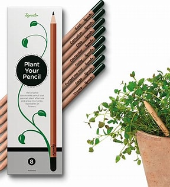
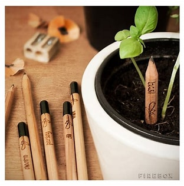
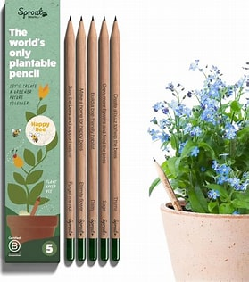

Eco-friendly pencils that bloom into herbs & flowers.
Shop NowAt BloomNote,we believe that even the smallest choices can help shape a greener future. That's why we created plantable pencils—a simple, sustainable way to write your thoughts and grow something beautiful in return. Each pencil is made with eco-friendly materials, and once it's too short to use, just plant it in soil and watch it sprout into herbs, vegetables, or flowers. It's not just a pencil—it's a step towards positive change.
  